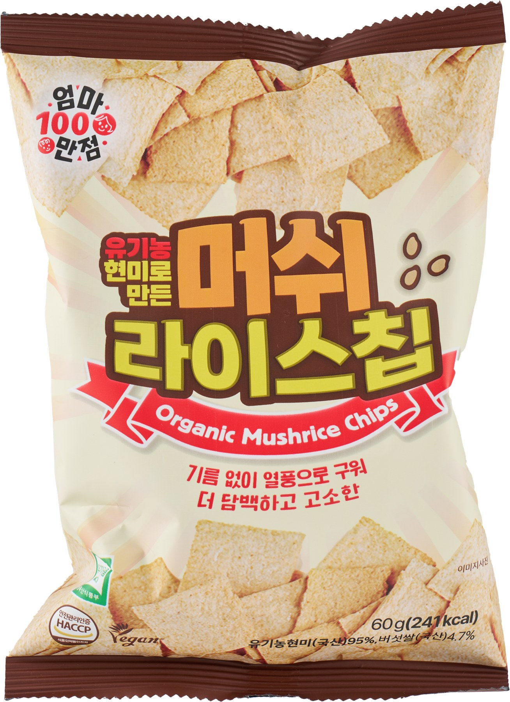

YOUNG GROWER FARM
버섯
버섯 생산의 경험을 일상의 식품으로.
버섯 생산
세 버섯에서 시작하는 생산과 연구.
상황버섯, 동충하초, 노루궁뎅이버섯을 생산·유통합니다. 화순의 버섯 생산 기반과 균사체 배양 경험이 다음 가공과 연구를 뒷받침합니다.
상황버섯
생산·유통과 식품 가공으로 연결합니다.
동충하초
생산과 코디세핀 성분 연구를 연결합니다.
노루궁뎅이버섯
균사체 배양과 에리나신 성분 연구를 이어갑니다.
배양과 가공
특허·품질 자료 보기
현미 기반 배양에서 식품으로.
현미 기반 약용버섯 균사체 재배 방법에 관한 국내 특허 제10-2567995호를 기반으로 배양과 가공 경험을 축적합니다. 화순 1,504㎡ 버섯 재배 시설과 518㎡ 가공공장이 운영 기반입니다.
버섯·곡물 제품
밥과 간식, 액상 식품으로 확장합니다.
배양과 가공에서 얻은 경험을 일상에서 접할 수 있는 식품으로 구현합니다.

보위강 버섯쌀
버섯 배양 경험을 곡물 식품으로 연결한 제품입니다.

머쉬라이스칩
버섯쌀이 함유된 현미칩. 해외 바이어 상담의 주요 제품입니다.

보위강 버섯 진액
버섯 원료를 가공한 액상형 식품입니다.

곡물 제품의 확장
파로·호라산밀·병아리콩을 활용한 곡물 제품을 개발합니다. 사진은 곡물 제품의 활용 예시입니다.